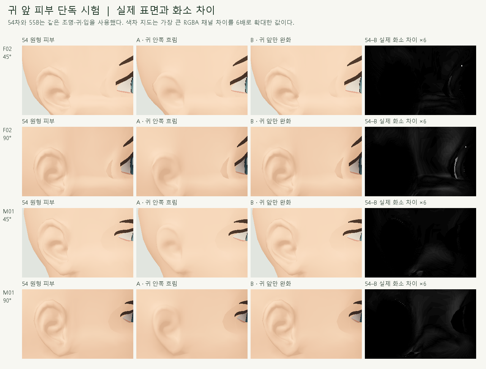
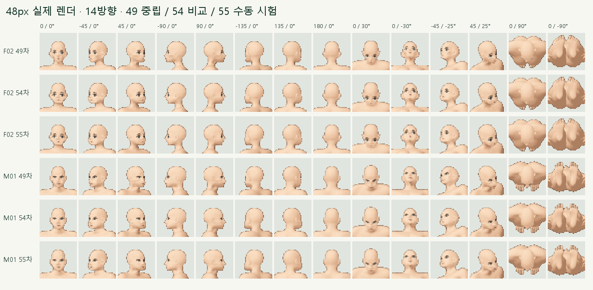
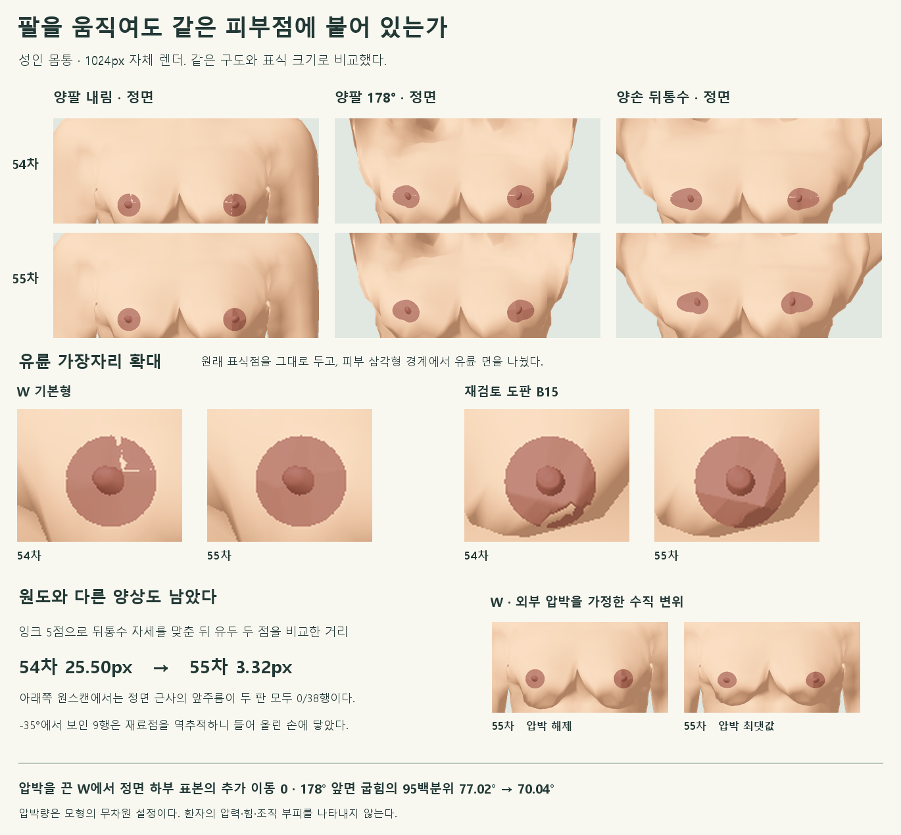
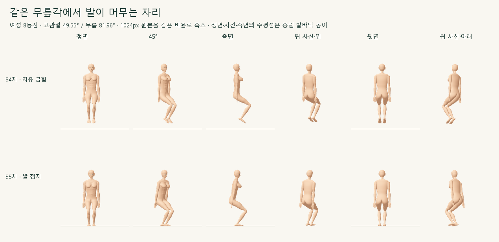
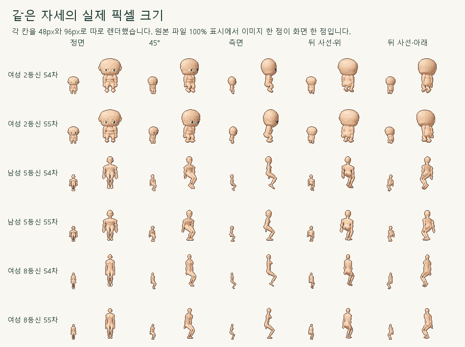
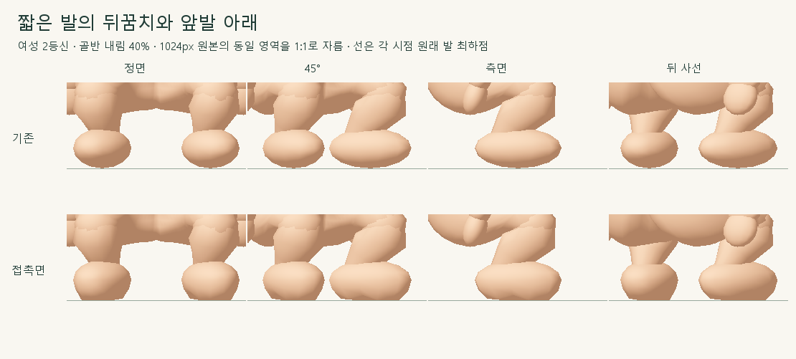
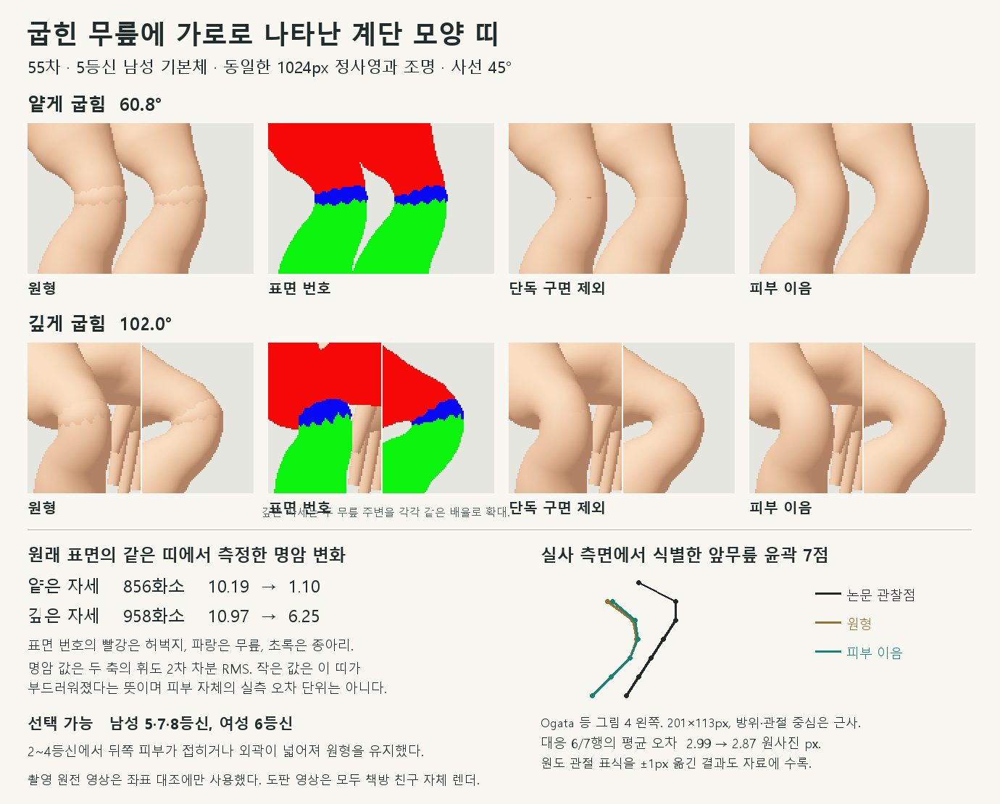

숫자가 좋아진 곳과 그대로 남길 기본형
얼굴은 귀 앞의 접힌 피부를 잇되 귀 안쪽의 골을 보존했다. 입을 함께 바꾼 후보는 교정에 사용한 다문 입에서 좋아졌지만 벌린 입과 다른 표정에서 악화했다. 49차 보존 중립은 유지하고, 귀 앞 피부·입매·두 교정을 분리해 수동 비교한다. 성인 가슴은 표식의 원래 붙임점을 지킨 채 가려진 유륜 면과 팔 올림의 피부 이동을 검토했다. 접지는 실측 재생과 수동 자세를 바꾸고 되돌려 볼 수 있게 연결했다. 이 결과만으로 14개 기본형과 모든 변형의 완성을 승인하지 않는다.
귀 안쪽을 지키며 귀 앞의 꺾임을 줄이기
첫 후보 A는 귀까지 평활화해 페른 633개·힘멜 647개의 귀 정점을 모두 움직였다. 보호 후보 B에서는 그 구간의 위치와 법선이 모두 유지됐다. 귀 보호·전이 구간 밖의 법선각 90백분위는 페른 24.179→15.228°, 힘멜 10.143→6.511°였다. 이는 메시의 국소 접힘 지표다. 머리카락에 가려진 관자 피부가 원화와 일치한다는 측정은 아니다.

| 인물·원화 | 사용 관계 | 49차 | 54차 | 55차 |
|---|---|---|---|---|
| 페른 28화7 | 입 교정에 사용 | 0.742 | 1.081 | 0.450px |
| 페른 5화3 | 기존 목록 보유 · 이번 입 표식 신규 | 1.019 | 1.019 | 1.249px |
| 힘멜 3화3 | 입 교정에 사용 | 0.586 | 0.676 | 0.610px |
| 힘멜 7화2 | 기존 목록 보유 · 이번 입 표식 신규 | 2.115 | 2.247 | 2.247px |
두 새 표식 컷은 이번 입 조형값 결정에 쓰지 않았으나 원화 자체는 이전에 수집한 목록에 있었다. 완전히 보지 않은 자료라고 부르지 않는다. 힘멜 설정2의 벌린 웃음도 0.602→1.127px로 악화했다. 눈·코와 보이는 귀로 카메라를 맞추고 입·턱은 정합에서 뺐으며, 수평·상하 ±8° 민감도를 함께 기록했다. 감은 눈과 손가락·머리카락 가림은 남은 불확실성이다.

붙임점과 그 사이의 표면을 구별하기
89형의 원래 표식점 272,118개는 같은 피부 삼각형에 붙어 있었지만, 점 사이의 넓은 유륜 면은 볼록한 피부를 통과했다. 여섯 선별 조건에서 악화 없이 가림이 합계8화소 이상 줄어든18형에만 면 분할을 적용했다. 별도90조건의 가려진 표식 화소 합은1,813→184였다. 서로 다른 해상도가 섞인 합계이며 사람의 정확도나 전체 면적의 오차율이 아니다. B15의 팔178°·압박0.7·요77°/피치−25° 실제48px에서는1화소 불리했다.
W의 뒤통수 자세에서는 유두를 제외한 잉크5점으로 정합한 뒤 양쪽 유두 위치를 쟀다. 평균 거리는25.497→3.324px, 남은 좌우 오차는1.98·4.67px다. 잉크 정합 자체의 RMS도8.99px다. 왼쪽을 선별에 쓰고 오른쪽을 확인했지만 같은 사람의 점이므로 다른 사람에 대한 독립 검증은 아니다.

178° 앞면 굽힘의95백분위는77.02→70.04°로 줄었으나53차69.61°에는 못 미쳤다. 원도5c의 주름 대응은13행 중9행을 유지했지만 거리0.01977→0.02015로 조금 악화했다. 6c 앞주름의38행은 두 판 모두 대응이 없었다. 아래에서 검출한9행은 실제 재료점을 따라가니 모두 들어 올린 손에 닿았다. 피부선으로 오인하지 않는다. 홈을 더 판 후보는 두 면이 뒤집혀 보류했다.
발을 고정했을 때 무릎과 골반도 실측처럼 움직이는가
14개 전신과 체형 양끝을 합친42조합에서 네 자세168건을 확인했다. 현재 기하 검사에서 퇴화면은0, 발의 바닥 오차와 기준 평면 이동은 최대 약1.39×10⁻¹⁷ 모형 단위, 최소 삼각형 면적비는0.124였다. 뼈 길이2,562검사의 최대 차이는8.88×10⁻¹⁶이었다. 이 작은 수치는 수학적으로 접지·길이를 유지했다는 뜻이며 자연스러운 피부나 동작의 승인이 아니다.

공개 C3D의 골반 궤적만 맞추던 초기법과 다리 기울기를 맞추는 방법을 같은 기록에서 비교했다. AB01·AB03·AB06·AB10의 무릎각 MAE는 초기법22.70/23.73/44.73/27.97°에서 기울기법0.44/0.62/0.32/0.92°로 줄었다. 그러나 기울기법의 골반 내림 오차는 다리 길이의 약0.051/0.052/0.096/0.092가 남았다. 입력한 다리 각도를 재현했다고 골반 궤적과 접지력이 모두 맞는 것은 아니다. AB06도 각도식 검증 전에 이미 열람했으므로 미열람 시험으로 세지 않는다.


무릎 피부 잇기는 검수한 남성5·7·8등신과 여성6등신 네 원형에서만 수동으로 볼 수 있다. 접지 도구의 ‘무릎 피부 잇기’ 체크를 켜고 끄면 같은 자세·카메라의 시안과 기존 그림을 번갈아 비교한다. 다른 체형 전체로 확대 적용하거나 기본형 완성으로 승인한 결과가 아니다.

피부에 붙인 뒤꿈치·앞발 표식은 바닥 압력점과 다르다. 원본은+Z가 높이이고 단위는 미터여서 축을 잘못 읽은 첫 측정은 폐기하고 변환을 재검했다. C3D 끝에서 실제 읽지 못한 프레임은 합성하지 않았다. 지면반력·조직 물성·실제 압박판과 임의 환경 위 접지는 아직 검증하지 않았다.
참고그림에서 가려진 곳을 직접 지정하기
사진·그림의 앞머리와 손을 보이지 않는 피부로 해석하지 않도록 가림 편집 연구를 연결했다. 실측 한 사람의 두상 메시와 합성 흉부 외피 각1개를 렌더해 가림을 만들었다. 같은 입력 시점의 손실 전26점에서 128px 수평 경계 오차는 두상10.769→5.731px로 줄었지만 흉부10.808→18.154px로 악화했다. 이26점은 같은 사진의 복원 진단이며 독립 검증이 아니다.
| 대상 | 요/피치 | 이전 | 가림 편집 뒤 |
|---|---|---|---|
| 두상 | −30°/0° | 3.907 | 3.980px |
| 두상 | 25°/20° | 1.619 | 1.644px |
| 합성 흉부 | −30°/0° | 3.430 | 3.425px |
| 합성 흉부 | 25°/20° | 1.062 | 1.081px |
두상은 두 각도에서 모두 악화했고 흉부도 방향에 따라 달랐다. 실제로 다시 촬영한 사진이나 다른 사람의 검증은 없으며 모두 수동 비교·자동 채택 보류다. 표시한 가림은 관측에서 제외할 근거이고 숨은 피부를 실측한 결과가 아니다. 48px 얼굴 입선과 이128px 경계 오차는 서로 다른 지표라 직접 합산하지 않는다.
학습 근거와 이번 회차의 배분
이번 회차의 학습 근거는 110건이다. 이는 실제 측정·관찰 행의 수이며 개선된 조건 수, 독립 표본 수, 학습 완료한 신경망 수가 아니다. 같은 컷의 민감도 각도와 같은 체형의 자세를 별도 행으로 기록했고 악화·동률·이전값이 없는 관찰도 남겼다. 사람의 채택은 별도 판정이다.
얼굴·성인 여성 가슴의 순수 조형30%, 기본 모델링·리깅·벌징·애니메이션70%를 회차 계획으로 유지했다. 이번70%는 하체 접지·무릎/골반 연결·실측 시간 재생과 수동 전환에 썼다. 회차 전체 제작 시간을 동일 방식으로 계측하지 못해 실제 시간의3:7 달성은 미측정이며 배포 대기는 제작 시간에 포함하지 않는다. 부위 설정·재질, 이후 환경·심리 검증으로 이어가는 순서를 유지한다.
수치·단위·사용 관계가 있는 학습 기록발표 전 검사와 발표 뒤 확인
발표 전에는 같은 카메라의54/55 실모델, 실제48·1024 버퍼, A4 원고 한 쪽과 여백, 접지의 실측→수동→되돌림, 모바일 폭을 로컬에서 검토한다. 발표 뒤에는 운영 프로젝트 카드→연구실→같은55 모델을 다시 열어 회차·자료 수·화소와 이전판 복원을 확인한다. 비공개 관리자 원문은 정규 Firebase 가져오기와 서버 재조회가 끝나야 별도로 완료된다. 이 일지의 로컬 결과만으로 두 후속 확인을 완료 처리하지 않는다.
원전과 권리·보존
원전과 우리 추론·실제 시험을 각 A4 원고에서 구분했다. 원화 권리는 원작자·출판사·제작위원회에 있다. 공개 도판은 자체 모델 렌더이며 원본 스캔·실물사진·개인 입력·관리자 원문은 공개 파일에 넣지 않는다. 기존 판과 실패 후보는 보존한다.